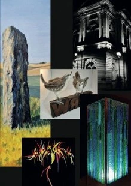

Phoenix Studios

Mae Phoenix yn stiwdio annibynnol yng Nghaergybi, ac mae’n cefnogi nifer o artistiaid ar draws ystod eang o gyfryngau gan gynnwys paentio, ffotograffiaeth, gwaith gwydr, crefftau a gwaith clywedol/gweledol
Phoenix is an independent artists’ studio located in Holyhead, supporting a number of artists across a wide range of media including painting, photography, glass work, crafts and audio/visual.
01407 459139 / 07946 041930
firebird@phoenixstudiosmon.co.uk
3SWISS COTTAGE, LONDON ROAD, HOLYHEAD, LL65 2TJ
O’r gylchfan ar gyffordd yr A5 â’r A5153 cymerwch yr A5 tuag at Gaergybi, ar y chwith ger y teras o bedwar bwthyn gellir cyrraedd y fynedfa i Swiss Cottage trwy’r giât, ar ochr dde’r pedwar bwthyn. O’r giât, dilynwch yr arwyddion.
From the roundabout at the junction of the A5 with the A5153 (adjacent to Tesco) take the A5 towards Holyhead, stopping almost immediately, on left, adjacent to the terrace of four cottages. Swiss Cottage is accessed through the gate, at the right hand side of the four cottages. From the gate, follow the signs.